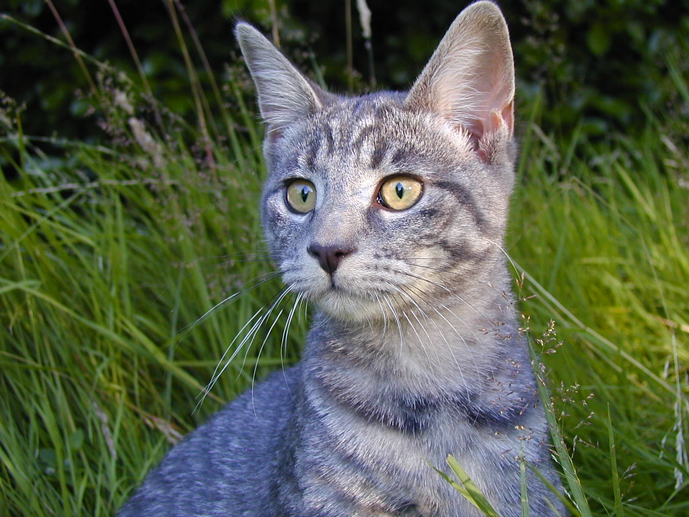
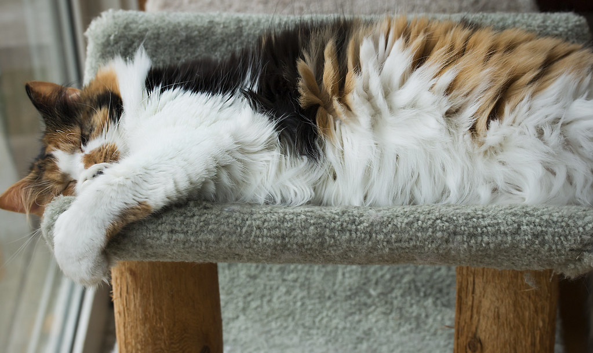
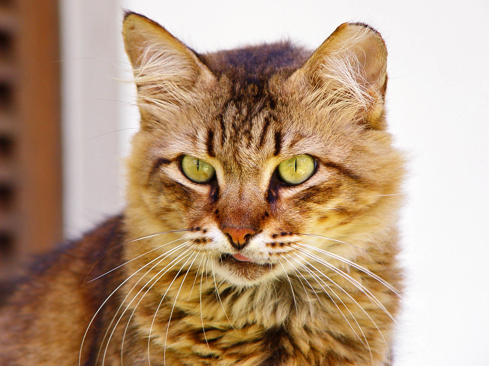
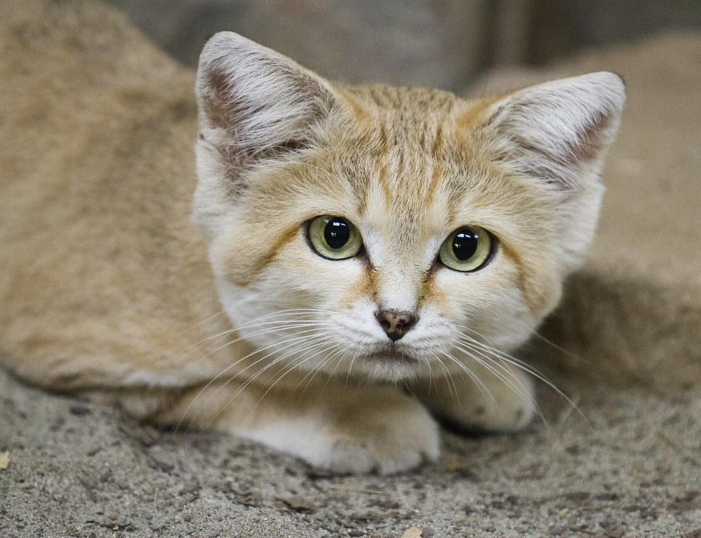

tento web pojednává o video hře minecraft
o minecraftu
Minecraft je sandboxová videohra, kterou vytvořil švédský vývojář Markus "Notch" Persson a později ji vyvíjela a vydávala společnost Mojang. Hra byla vydána v roce 2011 a od té doby se stala jednou z nejpopulárnějších videoher na světě.
Hráči v Minecraftu mohou vytvářet a rozšiřovat svět tvořený bloky, které reprezentují různé materiály, jako jsou kámen, dřevo, země, písek a další. Hráči mohou těžit suroviny, stavět stavby a vytvářet různé předměty, jako jsou nástroje a zbraně.
Minecraft obsahuje různé herní módy, jako jsou přežití, tvorba, dobrodružství a více hráčů. V módu přežití hráči musí přežít v divočině, bojovat proti nepřátelům a hledat zdroje, zatímco v módu tvorby mají hráči neomezený přístup ke zdrojům a mohou stavět cokoli, co si přejí.
Minecraft také umožňuje hráčům hrát společně přes internet nebo lokální síť, kde mohou spolupracovat na stavbě a zkoumání světa Minecraftu. Hra je k dispozici na různých platformách, včetně PC, konzolí a mobilních zařízení.
jak stáhnout minecraft
1.Navštivte oficiální stránku Minecraftu na minecraft.net.
2.Klikněte na tlačítko "Get Minecraft" v horní části stránky.
3.Vyberte, zda chcete koupit Minecraft pro PC/Mac nebo pro mobilní zařízení.
4.Klikněte na tlačítko "Buy" a postupujte podle instrukcí, abyste dokončili nákup.
5.Po dokončení nákupu budete mít přístup k odkazu ke stažení Minecraftu. Stáhněte a nainstalujte hru podle instrukcí.
Pamatujte si, že pro hraní Minecraftu na PC budete potřebovat účet na webových stránkách minecraft.net a také Java Runtime Environment (JRE). Pokud již Java na vašem počítači nemáte, můžete ji stáhnout z oficiálních stránek Oracle.
jak hrát minecraft
1. Spusťte Minecraft a zvolte "Singleplayer" nebo "Multiplayer". Pokud si chcete zahrát sami, zvolte "Singleplayer", pokud si chcete zahrát s ostatními hráči, zvolte "Multiplayer".
2. Pokud jste si zvolili "Singleplayer", klikněte na tlačítko "Create New World" a zvolte název světa a nastavení, jako jsou typ světa, obtížnost a další.
3. Pokud jste si zvolili "Multiplayer", připojte se k serveru. Musíte zadat IP adresu serveru a připojit se k němu. Pokud nevíte, jak najít server, můžete použít webové stránky, jako jsou Planet Minecraft nebo Minecraft Servers, kde jsou k dispozici seznamy populárních serverů.
4. Jakmile se nacházíte ve světě, začněte těžit suroviny a stavět. Hráči mohou těžit dřevo, kámen, uhlí, zlato a další suroviny a použít je k vytvoření různých předmětů, jako jsou nástroje, zbraně a budovy.
5. V Minecraftu se musíte také chránit před nepřáteli, jako jsou zombie, kostry a pavouci. Zajistěte si dostatečné zásoby jídla, abyste udrželi své zdraví.
Tyto kroky jsou základem pro hraní Minecraftu, ale hra obsahuje mnoho dalších prvků a funkcí, které můžete objevovat a zkoumat, jakmile se budete s hrou více seznámit.
moje zhodnocení minecraftu
minecraft je super hra s přáteli i bez nich






© 2023 Matouš Ptáček